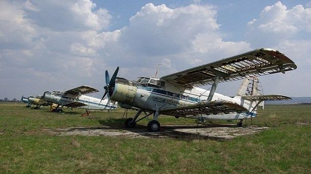
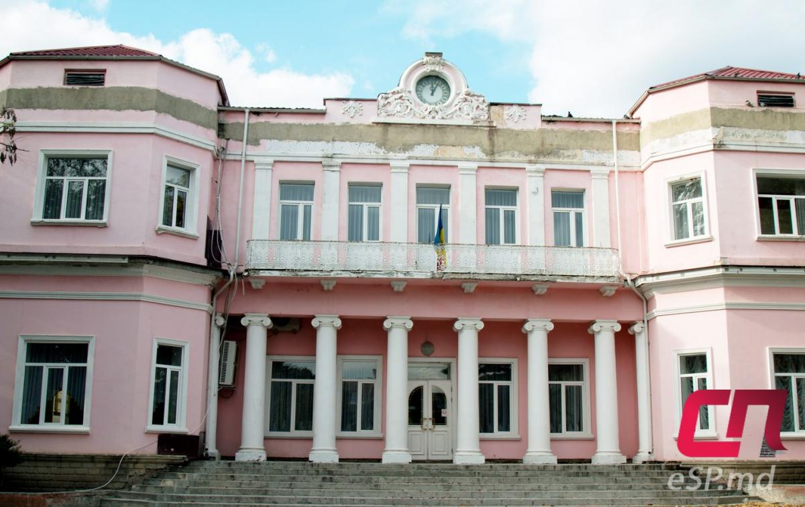
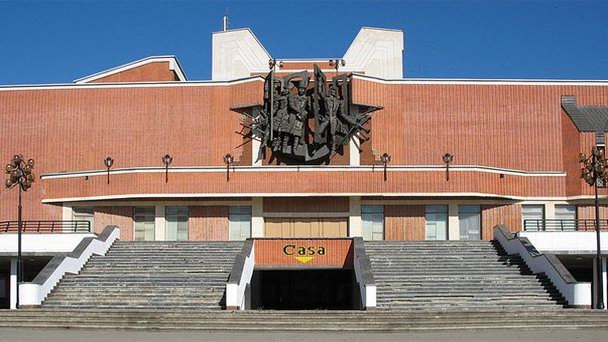

Интерестные места
Аэропорт Бельцы-Город
Аэропорт Бельцы-Город - один из двух аэропортов города Бельцы, который, в отличие от международного Бельцы-Лядовены, был региональным аэропортом. На сегодняшний день аэропорт не работает, а на его месте располагается специальная экономическая зона (ограниченная территория с особым юридическим статусом). Раньше аэропорт с его площадками использовался для внутренних полетов между городом и соседними молдавскими городами. Во время Второй мировой войны он был важнейшим аэропортом в этом регионе. В то время он принимал небольшие самолеты, выполняя хозяйственные и публичные функции. Аэропорт располагается непосредственно в городе Бельцы, поэтому к нему нетрудно добраться от центра города на троллейбусе (время в пути - 10 минут).
Здание загса
Точная дата постройки особняка неизвестна. Первое время строение было одноэтажным. После смерти главы семейства наследники выставили его на продажу. В 1914 году его выкупили для нужд Бельцкого земства, в 20–30 гг. в нём стала размещаться префектура Бельцкого уезда. Для этих целей был достроен второй этаж, установлены шесть колонн, поддерживающих балкон, и др. Проект изменений подготовила архитектор Этте-Роза Спирер. В послевоенные годы в этом здании размещался Дворец пионеров. Сейчас здесь расположен Дворец бракосочетаний.
Национальный театр им. Василе Александри
Датой основания этого национального театра является 16 мая 1957 года. Изначально он был молдавской труппой, которая дополняла русский театра, работавший в городе Бельцы с 1947 года. В мае 1990 года театр получает новое название и становится Национальным театром имени Василе Александрии. Здание было открыто 16 мая этого же года, в нем расположились два зала, подразделяющиеся на малый и большой, а также, круговая сцена. Проект разработан архитектором Янина Гальперина. За все время театр показал порядка 190 спектаклей, которые охватили как взрослую, так и детскую аудитории. Театр располагает национальным и международным репертуарам, охватывающим как классические, так и современные постановки. Данный театр входит в число лидеров, занимающихся постановками национальной драматургии. Весь репертуар театра составлен на основе текстов, написанных авторами из Молдовы и Румынии. Все артисты труппы выпускники университета искусств Молдовы